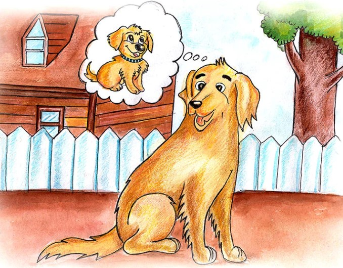

Story Book
HIDE AND SEEK
A simple game of hide-and-seek leads the children into the adventure of their lives. An exciting story that will have little readers turning the pages, eager to know what comes next. ames, his sister Sally, and Mark, their BFF (Best Friend Forever) were bored. They had played all day but now that it was dark and difficult to see, they had nothing to do. They couldn’t play soccer because they couldn’t see the ball. They didn’t want to go inside and play a game because it was a beautiful springtime night and they liked being outside, especially after having to play inside all winter long. They just didn’t know what to do and it was a little too early for them to go home. “I guess I’ll just go home,” Mark said in a sad voice. “Aww come on,” replied James. “We still have time for another game of – of something.” Then Sally said, “I have an idea! Let’s play Hide-and Seek.” “I was just going to say that,” James said. “Yah, I’ll bet,” replied his sister. “You always say you were thinking of whatever I think of,” she snapped. “Do not!” James said in a loud voice. “Do too,” yelled Sally. Mark just looked down at the ground and shook his head from side to side. “They are at it again,” he mumbled to himself. Then he yelled, “Okay, let’s play Hide-and-Seek I’ll be the seeker!” He turned, faced a big tree, closed his eyes, and started counting out loud. “100 – 99 – 98 – 97 …..” Sally and Mark stopped arguing, looked at each other, and ran off in different directions to find a hiding place. In the distance they could still hear Mark counting “4 – 3 – 2 – 1. Ready or not, here I come!” Then he turned and began looking for places where they could be hiding.


GINGER THE GIRAFFE
Once upon a time, there was a giraffe named Ginger. Ginger lived in Kenya, a country in Africa. Like all giraffes, Ginger had a long neck and long legs. Because she was so tall, she was able to eat food from the very tops of the trees in the savannah. The savannah in Africa is an area with lots of grass and some trees. Sometimes, a savannah is called grasslands. The other animals like zebras and antelopes could not reach where Ginger could reach. But Ginger always found food. She loved the leaves and the new buds of the trees. One day, Ginger was busy eating her favorite leaves along with some other giraffes. It was a bright sunny day and there was not a cloud in the sky. It had not rained for a long time, so the grass was very dry. She heard a noise down at the bottom of her extra long legs: it was her friend, Mickey the Monkey. Mickey was trying to say something, but Ginger couldn’t understand what he was saying. He looked very tired. “What’s wrong?” asked Ginger. Ginger was a very kind giraffe and wanted to help everyone. Just then Mickey fell over! Ginger was also a smart giraffe. She knew what was wrong. Mickey couldn’t find anything to eat and he was very hungry. Ginger nibbled some fresh, tender leaves and buds from the top of the tree where she was eating. She dropped some of the leaves and buds to the ground near where Mickey was. Then she nudged him a little with the hoof at the bottom of one of her very long legs. “Wake up, Mickey!” said Ginger. “I’ve found something for you to eat.” Slowly Mickey sat up and ate a little. After a while, when Mickey was feeling better, Ginger asked him, “What’s happened, Mickey? Why are you so hungry? Why can’t you find anything to eat?” Mickey said, “It hasn’t rained for so long and now there’s no more food.” “That’s not good,” said Ginger. “What’s happening with the other animals?” “No one knows what to do,” answered Mickey. “All the zebras and the antelopes and the elephants are getting worried about the dry grass. Some of them are thinking about leaving the savannah and trying to reach the jungle.” “That’s a long trip,” said Ginger. “Are you going to go with them? “I don’t know,” answered Mickey. “What do you think we should do?” Ginger thought for a while and then suddenly, she had a good idea. “We should go talk to Leo the Lion. He is the smartest animal in the savannah!” Mickey was too tired to walk, so Ginger invited him to ride on her back. “Hold on tight to my neck,” said Ginger. “There’s a lot to hold on to,” joked Mickey. Ginger laughed. “You’re right. I’ve got the longest neck in Africa!” So they started their journey across to the other side of the savannah to look for Leo.

ABE THE SERVICE DOG
“Hi, I am Abe and I am a Service Dog. When I was a puppy, my owner told me I would be a Service Dog for a person who could not see. I didn’t know what that meant, but I knew it was something special. When I got a little older, I was sent away to school. My sister was sent to another school to learn how to help people with Autism. To be their friend and help them get around. One of my other brothers was sent to a special school so he could learn how to warn people that they were going to get sick before they did. My other brothers and sisters became good friends with people in good families. Not every dog can become a Service Dog. School was hard. I had to learn many things just like you. I had to learn to stop and look before crossing the street. And learn what a red, yellow, and green directional light meant and what I should do. I was taught how to guide a person to go left, right, to step up and down, to stop, to move forward a little, to back up, and much more. I had to learn where I was and how to get back, even in strange areas. I had to learn how to behave in a restaurant and never, ever, beg for food. That was hard. I had to learn that I could be a plain old playful dog as long as my halter was off. But once it was on… I was working. I became the eyes of my master and their safety and how they got around was up to me. After a long time in school, I graduated and my trainer introduced me to BJ. The person who would become my master. We were both excited.
